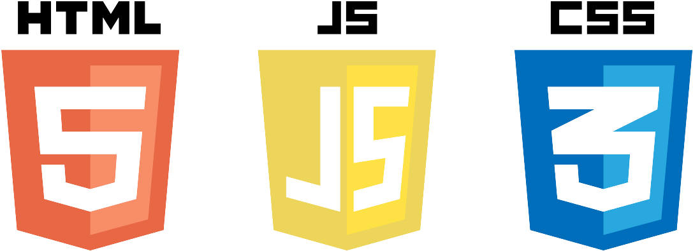

Antoine Baroin
Étudiant à INSTA, âge : 21 ans
Passionné par le développement web et la programmation de jeux vidéo, je suis actuellement étudiant à l’INSTA. Je cherche à approfondir mes compétences en codage et design pour créer des projets innovants et engageants. Rigoureux, curieux et motivé, je suis toujours prêt à relever de nouveaux défis. N’hésitez pas à me contacter pour collaborer ou en savoir plus sur mon parcours.
Compétences
